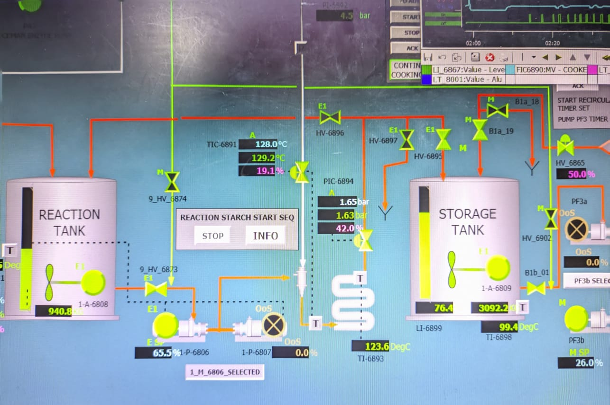
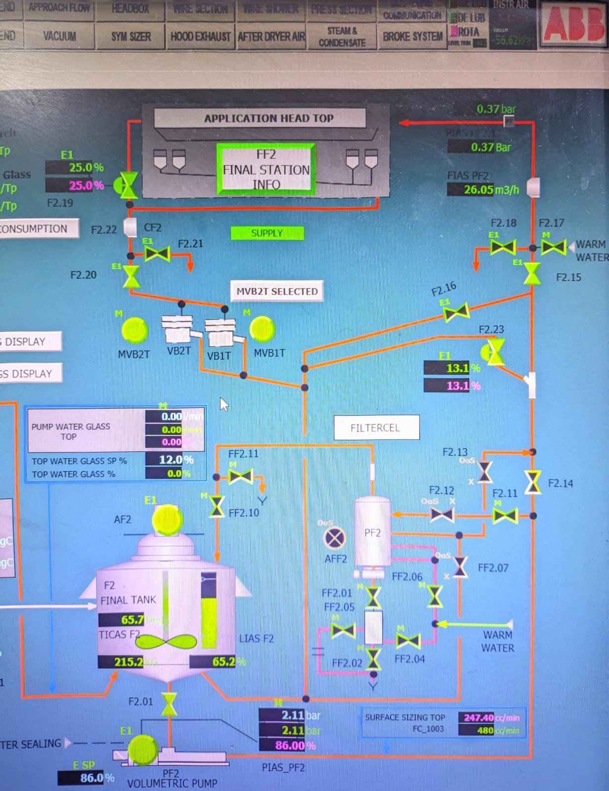
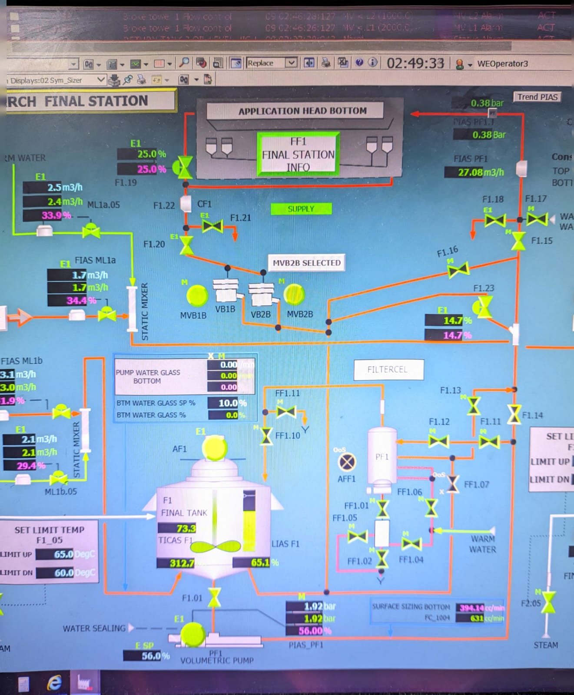

DCS Calculator & System
Pusat navigasi, ensiklopedia alur proses, dan kalkulator presisi untuk pengolahan pati. Dibangun ulang menjadi aplikasi cerdas satu pintu.
1. Pengenalan Persiapan Starch
Tahap persiapan starch adalah proses awal yang menentukan keberhasilan pembuatan kertas. Di sini, campuran antara pati, air, dan bahan kimia seperti alum serta enzim disesuaikan secara presisi.
SOP Harian
Data Kimia
"Safety First, Quality Next."
2. Peran Strategis Pati

Valmet SYM Sizer Machine
Pati bukan hanya bahan tambahan; ia merupakan komponen vital dalam meningkatkan kekuatan, daya rekat, dan kemampuan cetak kertas. Dalam industri modern, penggunaan starch menempati posisi ketiga terbanyak setelah selulosa dan pigmen.
Lihat Chemical3. Monitoring DCS
Pemantauan parameter kritis dilakukan secara terus-menerus untuk meminimalisir deviasi kualitas.
| Parameter Utama | Aktual | Status Kondisi |
|---|---|---|
| Temp. Reaction | 68°C | Cek Steam |
| Solid Content | 28% | Stabil |
| pH Starch | 4.8 | Low |
4. Alur Proses: Starch Mixing
Tahap ini merupakan langkah pertama dalam proses Starch Preparation, yaitu pencampuran air dan starch mentah dalam tangki pencampur. Kontrol DCS digunakan untuk mengatur rasio bahan, membuka katup, serta memantau level, suhu, dan kecepatan agitasi.
Gambar 1: Pengisian Starch dari Jumbo Bag

Gambar 2: Monitoring DCS Pencampuran
5. Alur Proses: Starch Reaction
Tahapan ini merupakan inti dari proses Starch Preparation, di mana slurry starch yang telah dicampur akan dimasak menggunakan pemanas. Proses ini penting untuk menghasilkan viskositas dan reaktivitas yang sesuai dengan kebutuhan produksi.
Gambar 1: Pemantauan Suhu Reaktor

Gambar 2: Aliran Masuk & Agitasi
6. Alur Proses: Starch Application
Tahap akhir dari proses Starch Preparation adalah pengaplikasian starch ke permukaan kertas melalui sistem Beam Sym-Sizer. Starch cair yang telah direaksikan akan disemprotkan secara presisi ke sisi atas dan bawah lembaran kertas.

Gambar 1: Injeksi Top Sizer

Gambar 2: Injeksi Bottom Sizer
Standar Operasional
Viewer Dokumen Resmi (SOP) Internal PM1
*Dokumen disematkan dari Google Drive. Hubungi admin jika preview gagal dimuat.
Kalkulator Interaktif
Alat bantu perhitungan lapangan 100% responsif & anti-ngelag.
Dasar Pati & Konversi
1. Rumus Solid Starch
2. Density Starch
3. Konversi Satuan Flow
Manajemen Aliran
4. Flow Starch Elevator
5. Hitung Flow (Beda Level)
Bahan Kimia
6. Flow Waterglass
7. Solid NaOH
8. Dosis Enzyme (PPM)
Kalkulasi Advance
9. Target Pengenceran Air
10. Pencampuran 2 Tangki
Tangki 1
Tangki 2
11. Starch Bonedry Flow
12. Starch Consumption
13. Retention Time
Punya pertanyaan seputar pengolahan starch, ingin diskusi formula baru, atau punya saran fitur?